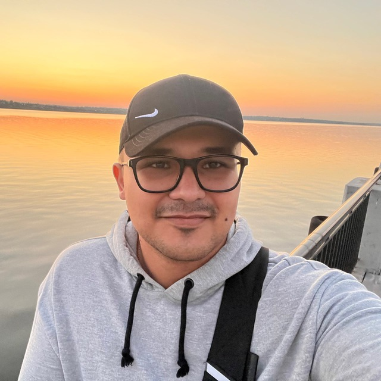

About Me
Software Engineering student with a passion for problem-solving both on and off the screen. When I'm not in front of a terminal, I enjoy hands-on crafts, gaming, and exploring how things work under the hood. Always learning, always building.